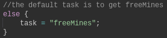

What is Vindinium?
Vindium is an AI challenge for programming. The goal is to create a bot that can win the game by collecting the most gold. In the game, one bot competes
with three other bots created by other programmers. There are few restrictions—all you need to do create a bot that will maintain its health and gain gold. These are only
baseline requirements, however. To successfully and consistently win the game, one needs to add to their code so the bot will outdo the other bots in every situation.
What I Made and How it Works
I programmed a bot to heal itself, fight other bots, steal mines, and claim free mines. This was done using javaScript. The key elements include variables, for loops, and if/else statemens.
The content of the code was divided into two main sections: what to do and how to do it.
link to full code: Vindinium AI Code
Overview of the Code
Above is what it looked like when my bot was going through different tasks as it was assessing each scenario during the game. My bot had four different potential tasks to do: take free mines, steal owned mines, attack other platers, and get health. To be able to allow the bot to choose which was the best option, I set certain
conditions in which each would be the best option. Additionally, I set an order of which task it should try first. The main priority was health--if you die you can't do anything else--so I said that if the bots health was less than 65,
then it needed to go to a tavern to fuel up. The second priority was to steal owned mines IF there was another bot that had more mines. The third priority was to attack other players; if you defeat another player, you get all of
their mines. Finally, the default task was to claim free mines. The next section will go more into detail, including the key parts of the code that allowed me to set an order of importance:
Specifics of the Code
GETTING HEALTH
In order to gain health, a bot needs to go to a tavern. Thus, I needed to code something that not only made the bot go to the tavern, but also know when and where. The following images show the code I used to make my bot go to a tavern when its health was low and the outcome of the code.
WHAT to do:
This is the code that made the bot go to the tavern when its health was low. The second picture is what it looks like when the bot was going to get health:
I chose 65 as the health that the bot would reset at. This is because as a class we set the default condition for attacking as "if the closest enemy bot has less life than my bot, then attack." So, I made sure to keep my bot at a high level of health to reduce the chance of being attacked.
HOW to do it:
This is the code that made the bot go specifically to the closest tavern:
The code above has the bot run through the array of taverns to find out which tavern would be the shortest path, using the a>b>c algorithm which I will get to later.
GETTING FREE MINES
In order to win the game, you need to have the most gold, so getting a freemine was the first thing the bot should know how to do.
WHAT to do:

I used this code to set the bots task to "freeMines" which meant claim the closest free mine. However, this was set as the last option, so the bot would first check if it was healthy enough or if it should attack first before going to get a freemine.
HOW to do it:
This code, similar to finding the closest tavern, had the bot run through an array using a conditional that compared all free mines and found the closest one to claim. A reault of the code would be the bot following the path to the closest mnine.
Outcome of the code:
The following is an image of what the code looked like when the bot decided to get a free mine:
STEALING
The task that I designed myself for the bot to do was steal the owned mines of the game. As the game goes on, the number of free mines
(which are needed to get gold and win) to claim eventually reaches zero. As opposed to chasing and attacking another bot for more mines, I chose to have my bot steal their mines individually.
WHAT to do:
The following code shows how the bot would only steal a mine if it there was an enemy bot that had the same or greater mine cound than my bot:
HOW to do it:
There were two parts to making the bot go to the closest owned mine of the richest player: 1) finding the richest player 2) finding the closest owned mine of that richest player.
1) I defined the "richest player" as the player with the most mines. To find the player with the most mines, I used the a>b>c algorithm to compare two bots' mines count at the same time. Here is an image of the code I used:
The following is the code that had all of the richest bot's claimed mines in an array, using an algorithm (a>b>c) to find the closest bot.

A>B>C Algorithm
The a>b>C algorithm is the basis of all of the code I used. For example, when my bot was low on health it needed the closeset tavern, not the one on the other side of the gane. However, it cannot compare all of the coordinates at once, so it uses the a>b>c algorithm. It takes the first tavern in the game (a) and compares it to the next tavern (b). Then, which ever tavern is closer is the one it takes.
For the sake of this example, let's say that the first tavern was closer (a). If we compare b and the next tavern (c), and we find that b is closer than c, then we can also assume (given that a > b) that a is also closer than c.
A New Perspective on Artificial Intelligience
This project was one of my first hands of experience of Artificial Intelligience and gave me a small glimpse of what AI is and how AI works. To see my final relfection on my personal growth and takeaways (and improvements from my first webpage to my last), visit my "About Me" page here. Here are some takeaways from this much valued learning experience :)
Successful?
My bot did what I wanted it to do; it successfully went to a tavern when its health was under 65, stole mines from the richest bot, attacked the closest bot when its health was over 81, and claimed the closest free mines.
Though it did do everything I ended up trying to do, there are some things that I would like to know how to do, like attacking the weakest player, or finding new ways to manipulate the if else statements. Here is a quick clip of my bot in action:
Simple or complicated?
At first, the coding was very overwhelming and complicated. But, with repetition, I found it quite easy, as it followed to basic structures of simple javaScript. Though, I do know that what we learned through this project is pretty surface level when it comes to understanding
what the outside world has accomplished.
A change in perspective
Prior to this project, I didn’t really know exactly what AI was—it was hard for me to wrap my head around the idea of a machine being able to make its own decisions without being manually controlled by a human that has an actual brain. This process of creating a bot to compete in the Vindinium AI challenge has given me a clearer idea of what AI is in its simplest form. Although I know it gets much more complicated, I now know what kind of code can be made to have a machine “make its own decisions.”
{kind=link}
{kind=link}